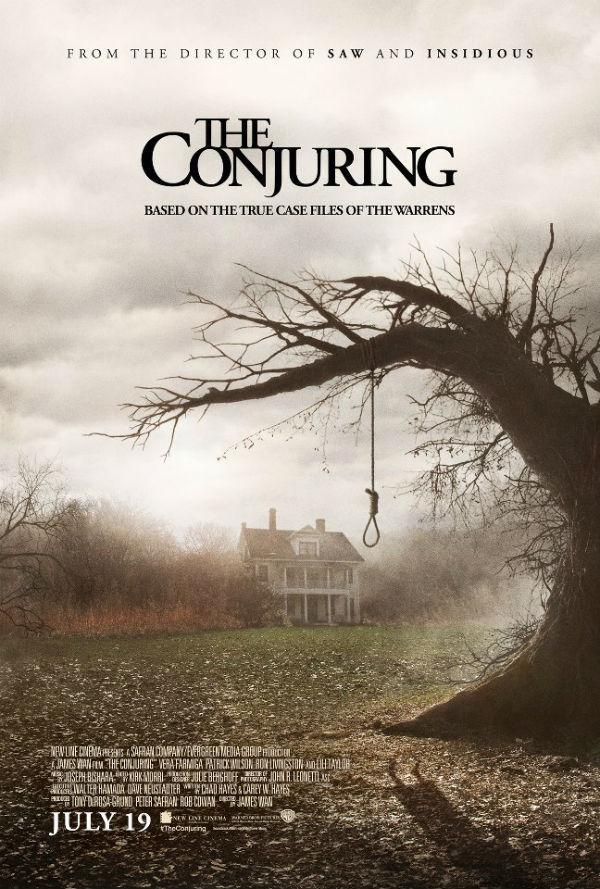
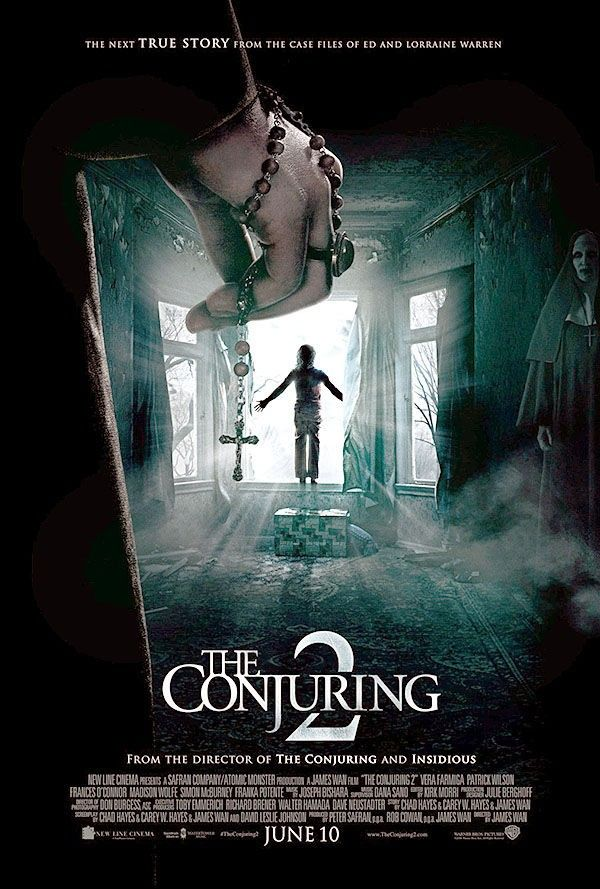

Annabelle
La familia Perron
The Amityville horror
El Poltergeistde Enfield
El juicio de Arne Cheyenne Johnson

Lorraine y Ed Warren fueron dos investigadores paranormales de Estados Unidos que convirtieron sus mejores casos en exitosas películas en la taquilla mundial. Ed era un veterano de la Segunda Guerra Mundial y Lorraine poseía el don de la clarividencia, permitiéndose entrar en trance como médium para contactar a los espíritus.Reconocidos mundialmente por sus tenebrosos casos y su colección de objetos paranormales.
Los 5 casos más terroríficos de los Warren
Annabelle
Annabelle fue el regalo de una madre a su hija Donna en 1970, quien estaba en ese momento estudiando enfermería. La joven, de 18 años, colocó el presente en la habitación del apartamento de estudiante que compartía. Le ayudaba a recordar a su madre. Pero poco a poco, empezó a ver cosas extrañas, como narró después.
Según su testimonio, la muñeca aparecía diariamente en una posición diferente a la que la había dejado, con las piernas cruzadas, los brazos en distinto ademán... Hasta el punto de que, con el tiempo, Donna llegó a afirmar que hasta cambiaba de habitación. La cosa no acabó ahí, puesto que empezaron a aparecer notas escritas por alguien desconocido con mensajes.
La situación provocó que la asustada aprendiz de enfermera y su compañera de piso, Angie, llamaran a una medium para que intentara averiguar lo que estaba pasando (desde un punto de vista paranormal, claro).
La experta en estos fenómenos acudió al lugar y, después de una sesión, les informó de que el espíritu de una niña de 7 años llamada Annabelle Higgins había poseído a la muñeca. La menor, al parecer, había fallecido en el lugar.
La familia Perron
Roger y Carolyn Perron se mudaron a Harrisville en Rhode Island con sus hijos para el año 1970, algo que parecía una buena decisión para aquellos que no conocían la historia de la casa que compraron, una que había cambiado de propietario por generaciones por un historial de asesinatos y suicidios.
Al principio, los espíritus que habitaban en la casa eran inofensivos, hasta amigables para los niños. Sin embargo, luego de descubrió que habían otros más agresivos que golpeaban las puertas, levitando los objetos de la casa y sorprendiendo a los miembros de la familia.
Pero esto no era nada, ya que el peor de todos los espíritus era Bathsheba Sherman, una bruja y satanista que se colgó a sí misma en el árbol de su propiedad que había sido en el siglo 19. Desde entonces, las situaciones paranormales empeoraron y la familia fue forzada a irse.
The Amityville Horror
El 13 de noviembre de 1974, Ronald DeFeo Jr. disparó y mató a seis miembros de su familia, incluyendo a sus padres y hermanos, en una casa situada en un tranquilo barrio de Amityville, Long Island. George y Kathy Lutz y sus tres hijos se mudaron a la casa, pero en 28 días ellos salieron aclamando que habían sido aterrorizados por los fantasmas que allí vivían.
La crítica alrededor de este caso remonta a que fue sensacionalizado, poco creíble o simplemente plano, declarado falso. De cualquier manera, George y Kathy creían que los eventos eran reales e incluso hicieron una prueba de polígrafo para justificar sus visiones, y ambos pasaron.
El Poltergeist de Enfield
El caso en sí toma lugar en la casa del consejo de Brimsdown, Inglaterra, cuando la madre de Peggy Hodgson afirmó que sus hijos fueron testigos de que los juguetes eran lanzados por los aires y sus muebles se movían solos.
Cuando llamaron a la policía, uno de los agentes de la policía estaba seguro de que había presenciado que una silla se movía por sí sola, aunque no sabía si esto se trataba de algo mundano o fantasmal. Con el tiempo, los niños también fueron levantados en el aire y voces demoníacas comenzaron a atormentar a la familia.
La historia del Poltergeist de Enfield atrajo una gran cobertura de prensa del Reino Unido durante 1977 y 1979.
El juicio de Arne Cheyenne Jhonson
El juicio de Arne Cheyenne Jhonson en 1981 fue el primer caso judicial conocido en los Estados Unidos donde la defensa utilizó el "El diablo me hizo hacerlo". De hecho, fue ese el apodo que la prensa le dio en los medios de comunicación, lo cual provocó un momento de histérica colectiva en el país.La historia en sí envuelve el asesinato de Alan Bono bajo la mano de Arne Cheyenne Johnson, mientras su prometida observaba horrorizada. Johnson clamó que había sido poseído al momento del asesinato, pero era la primera vez que los participantes se habían encontrado con actividad demoníaca.
Antes del incidente, el hermano de 11 años de la novia de Johnson, Deavid Glatzel, fue el anfitrión de algunos demonios. Cuando llamaron a los Warren para que quiten a los demonios del cuerpo del niño, aparentemente Johnson los invitó a que se alojen en él y ellos le hicieron caso.
La defensa no compareció ante la corte y Johnson finalmente fue condenado por el cargo de homicidio culposo, cumpliendo así una sentencia de cuatro años.
En 2014 se estreno "Annabelle" la pelicula, siendo un spin-off de la pelicula"The Conjuring" que se basó en el caso del mismo nombre de los Warren.

La historia de "The Conjuring" fue basada en el verdadero caso de la Familia Perron. Este ha sido una de las investigaciones de los Warren que mejor se ha documentado, y también una de las mejores representaciones en el cine.

Posiblemente el caso más famoso de los Warren, en gran parte por la franquicia de series depelículas de terror de "The Amityville Horror". Hasta ahora la ultima pelicula de la serie es:2The Amityville Murders" estrenada en 2018.

Es la secuela de The Conjuring de 2013. Fue estrenada en 2016,la película sigue a los Warren mientras viajan a Reino Unido para ayudar a la familia Hodgson, que está experimentando actividad poltergeist en 1977; que más tarde se conocería como el Poltergeist de Enfield.

The Conjuring 3,fue estrenada el 4 de junio de 2021. La pelicula es una secuela de The Conjuring (2013) y The Conjuring 2 (2016), siendo así la octava entrega de la franquicia The Conjuring Universe.